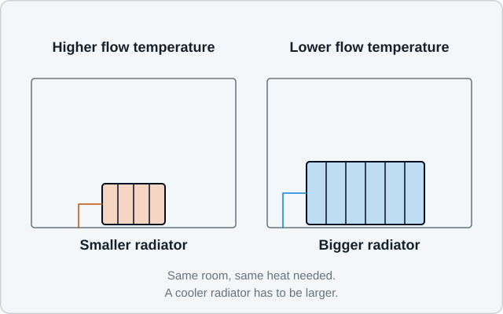
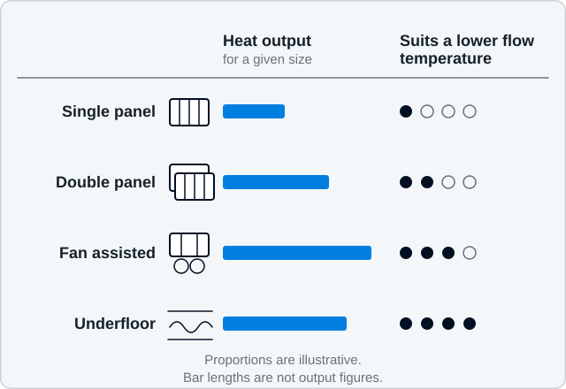

Will I need new radiators for a heat pump?
Some of your radiators will probably be large enough for a heat pump and some will not, and it is a room-by-room answer rather than a whole-house one. Radiators give out less heat when the water in them is cooler, so a heat pump system needs emitters sized for the lower flow temperature it is designed to run at.
What it actually means
A radiator does not have one fixed output. Its output depends on how much hotter the water inside it is than the air in the room.

Manufacturers publish radiator outputs at a standard temperature difference, usually 50 degrees between the average water temperature and the room. That was a reasonable reference for boiler systems running at 70 to 80 degrees. A heat pump system designed for a flow temperature in the region of 35 to 50 degrees is working at a much smaller temperature difference, so the same radiator gives out considerably less heat.
As a rough guide, halving that temperature difference leaves a radiator delivering somewhere around 40 per cent of its catalogue figure. The exact relationship varies by radiator type and manufacturer, so it is a useful illustration rather than a number to design from.
That is the whole issue in one sentence. Nothing is wrong with your radiators; they are simply being asked to do the same job with cooler water, and some of them have the surface area for it and some do not.
The emitters available to you
“Emitter” is just the general word for anything that gets heat out of the water and into the room: radiators, fan-assisted radiators, underfloor heating, and occasionally trench or skirting emitters.

Why it matters for the outcome in your home
If every room’s emitter can meet that room’s heat loss at the design flow temperature, the system can run at that lower temperature all winter. That is the condition in which a heat pump works best.
If one or two rooms fall short, there are three honest options: enlarge those emitters, accept a lower temperature in those rooms, or raise the flow temperature for the whole house. The last is the least attractive, because satisfying one small bedroom then affects the efficiency of everything.
Sequence matters too. Emitter decisions come out of the heat loss calculation, so anyone offering a radiator schedule before measuring the rooms is guessing.
What Airwarm checks
During the survey, Airwarm records each existing emitter: type, dimensions, panel arrangement, whether it has convector fins, and its condition. That gives a calculated output for each one at the proposed flow temperature, which is compared directly against the room’s calculated heat loss.
The result is a room-by-room schedule showing which emitters stay and which need to be larger. Airwarm also checks the practical side: whether the existing pipework can carry the required flow, whether valves and connections are serviceable, and whether there is a route to the rooms that need changes without lifting every floor.
Where a change is needed, the aim is the smallest change that solves the problem. A double panel in place of a single, or a slightly longer radiator in the same position, is often enough. Replacing every radiator is occasionally the right answer but never the automatic one.
Water quality matters too. Old systems accumulate sludge and debris that reduce radiator output and can damage a heat pump, so cleaning, filtration and correct water treatment are part of the work rather than an optional extra. BS 7593 is the relevant British Standard.
Emitters are then balanced at commissioning so flow is distributed as the design intended. An unbalanced system underperforms even when every radiator is correctly sized.
A photograph of a finished Airwarm radiator change will appear here. We would rather leave the space empty than fill it with a stock image of somebody else’s work.
Common misconceptions, stated fairly
“Heat pumps mean enormous radiators everywhere.” Sometimes rooms need noticeably larger emitters, particularly large living rooms and rooms above garages or open porches. But many homes already have generously sized radiators, either because the original installer was cautious or because the house has since been insulated.
“Underfloor heating is the only proper answer.” Underfloor heating is an excellent low-temperature emitter, and it is worth considering in a renovation or extension where floors are already coming up. It is not a requirement, and retrofitting it throughout an occupied house is disruptive.
“Cast iron radiators are useless with a heat pump.” They are not. Cast iron holds a lot of water and responds slowly, which suits steady low-temperature operation reasonably well. The question is still whether the surface area meets the room’s heat loss.
“Fan-assisted radiators solve everything.” They give a lot of output from a small unit and are genuinely useful where space is tight. They also contain a fan, which means a small electrical load, an audible sound and a component that can eventually fail. A good tool used deliberately, not a default.
“I should use my radiator valves exactly as before.” Heat pump systems generally favour steady, whole-house operation rather than shutting rooms down and reopening them. Airwarm will explain how your controls are intended to be used, because operating them like a boiler is a common source of disappointment.
What you should do next
Start with the Home Energy Assessment. One of its questions asks whether you would consider radiator changes, and an honest answer is genuinely helpful.
A good heat-pump installation begins with the home, not the product. Airwarm checks the building, emitters, hot-water requirements, controls and practical installation details before making a recommendation.
If you already know that a particular room has never been warm enough, mention it. Rooms that struggled on a boiler system almost always need attention in a heat pump design, and it is much better to find that in the survey than in February.
Frequently asked questions
Do all the radiators get changed at once?
Only the ones that need to be. The schedule is per room, and it is normal for a house to need changes in a minority of rooms.
Can I upgrade radiators before deciding on a heat pump?
You can, and in some cases it makes sense, particularly if a room has always been cold. It is worth having the heat loss calculation done first so the new radiator is sized for the future system rather than the current boiler.
What about towel rails in bathrooms?
Standard towel rails often give out very little heat at low flow temperatures, so bathrooms frequently need a larger rail or an additional emitter. It is one of the most common findings in a survey.
Read next
Heat loss explained
Where the emitter schedule comes from, and why it cannot be written before the rooms are measured.
Weather compensation
How the system decides what water temperature to send out, and why it should be left to do it.
Installation
How radiator changes, pipework and commissioning are planned so the house stays liveable.
Start with your home, not a product
The Home Energy Assessment takes a few minutes, asks for no photographs and gives you an honest first view of whether an air source heat pump is worth exploring for your property.
Unusual property? Listed building, off-grid, a renovation part way through? E-mail us and describe it. We would rather have the conversation than have you guess.